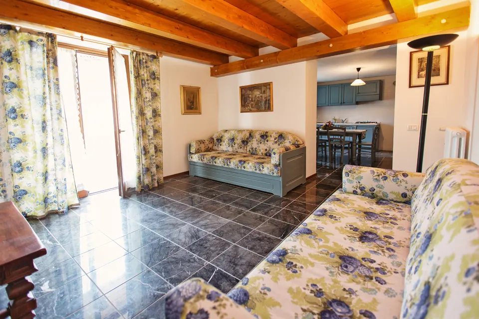

Casa Vanda Genziana
Due camere e un ampio soggiorno sulla terrazza in legno: appartamento 4 stelle per famiglie a Viaso.
Genziana ha due camere, un bagno, una cucina con tavolo da pranzo e un ampio soggiorno abitabile con accesso alla terrazza in legno. Blu e grigio distribuiti sugli arredi danno una sensazione di accoglienza familiare.
Villa Vanda, riconosciuta dal Comune di Socchieve come edificio di valore storico, risale alla seconda metà del Settecento: architettura tipicamente carnica, archi in pietra e ballatoi lignei (linde) da cui si apre un bellissimo panorama. Si trova a Viaso, frazione tranquilla, soleggiata e immersa nel verde, dove la vita scorre lenta con i ritmi della natura. Gli ospiti hanno a disposizione una piccola corte con giardino e posti auto riservati accanto all'ingresso.
- TV
- Riscaldamento
- Posto auto
- Giardino comune
- Wi-Fi
- Animali ammessi
6 foto di Casa Vanda Genziana
Viaso, frazione di Socchieve
Viaso sorge all'incrocio dei sentieri che uniscono le frazioni del comune e sorprende per la sua capacità di restare nascosto pur essendo vicinissimo a Socchieve. È attraversato dal percorso di mountain bike e, con il ristorante La Baita, è un porto sicuro per chi ama il turismo enogastronomico.
Codice identificativo nazionale (CIN): IT030110A1F58PGPCB